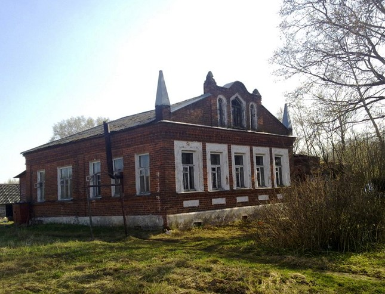
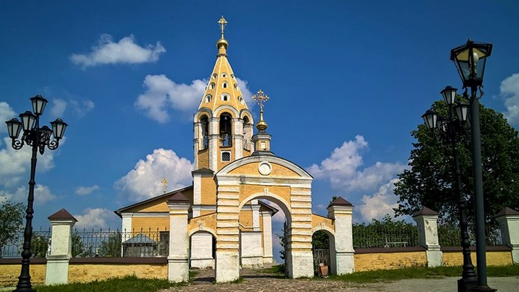
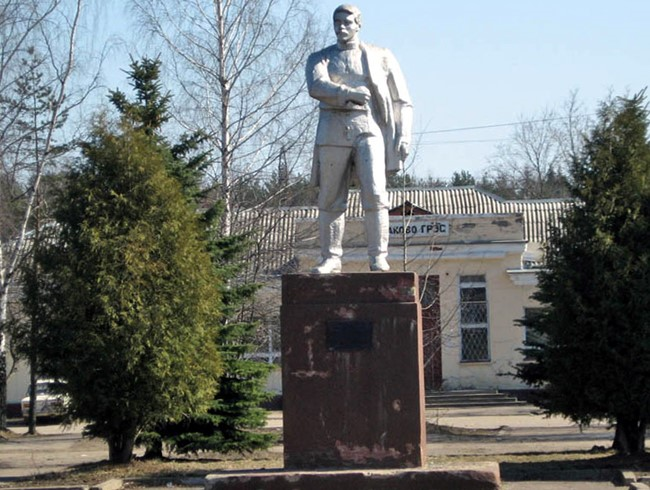
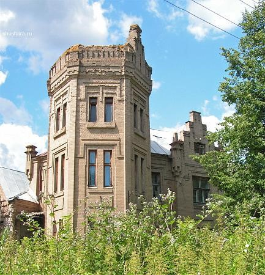
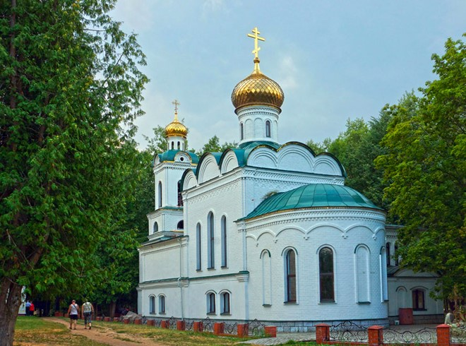
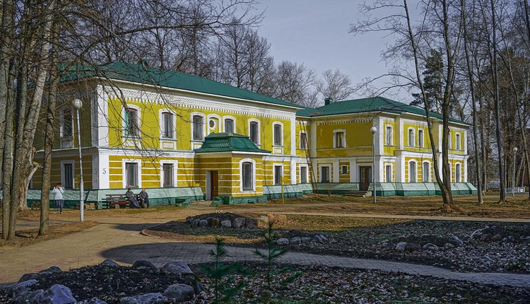
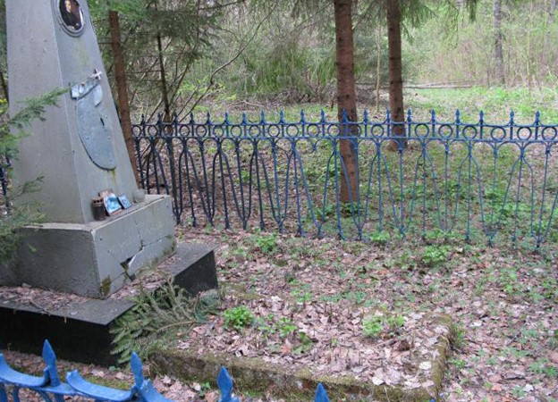

1.Усадьба Рождественских

Дом принадлежал известной купеческой семье, и является единственным памятником, который остался от города Корчева, затопленного во время строительства Иваньковского водохранилища в 1937 г. для канала Москва-Волга. Усадьба сложена из кирпича, поэтому ей и удалось пережить затопление.
2.Церковь Рождества Пресвятой Богородицы (Рождества Божьей Матери) в селе Городня)

Построенная в 14 в., является древнейшим храмом Тверской области и всей страны. Поражает архитектура храма, но уникальность месту придают подземелья церкви, где были найдены красивые фрески, созданные в 15 в. Наиболее раннюю датировку основания церкви предлагает С. В. Заграевский, относя это событие к 1290-м годам — периоду княжения в Твери Михаила Ярославича. Первое достоверное упоминание церкви относится к 1412 году, когда, согласно летописи, она пострадала в результате пожара, после чего была выстроена заново. О старом названии Городни (Вертязин) напоминает название Вертязинский откос — высокий крутой берег Волги.
3.Памятник П. Конакову

Установлен на железнодорожном вокзале и посвящен известному революционеру Порфирию Конакову. Именно в его честь назван город. Его заслуга состоит в том, что в 1906 году в Кронштадте им был организован бунт матросов. Вскоре Конакова арестовали и расстреляли.
4.Электрический театр
До 1917 года в здании театра проводились музыкальные и кинематографические вечера. На просмотры съезжались жители соседнего города Корчева. Электрический театр построен на деньги М. Кузнецова, который был владельцем фабрики фаянса.

Это старинное, напоминающее средневековый замок здание. Сначала была построена только шестиугольная башня с зубчатой, похожей на бойницы крепости крышей - водонапорная башня для больничного городка. Позднее М.С. Кузнецов решил построить для рабочих электротеатр «синематограф». Для этого к водонапорной башне в 1912-1913 гг. пристроили помещение. Строительство поручили Н.А. Потураеву, поклоннику стиля модерн. Местные жители стали называть это здание замком инженера Потураева.
5.Петропавловская церковь (Карачарово)

По своей форме и конструкции является однопрестольным храмом. Его построил князь Григорий Гагарин, Воссоздан в 1995 году.
6.Имение Гагарина

С 1847 года владельцем поместья стал Григорий Григорьевич Он построил усадьбу в красивом итальянском стиле. Это был князь, который отличался прогрессивными взглядами, знаменитый художник и архитектор, ученик К.Брюллова. За свою жизнь создал больше 2 тысяч акварелей, картин, рисунков, которые хранятся в разных музеях страны. Был знаком с Пушкиным, Лермонтовым, создавал рисунки к их произведениям. В 1841 году Гагарин получил орден «В награду личной храбрости и хладнокровного мужества». Николай I приказал зачислить его в гусарский полк поручиком. В 1859 году Григория Гагарина избирают вице-президентом Петербургской академии художеств. Последние два десятилетия Он подолгу жил в Карачарове и обустраивал свое имение, где приказал разбить уникальный парк, который напоминал лондонский Гайд-парк. В нем было 54 аллеи, из которых сохранилось только 8.
7.Могила князя Гагарина

Григорий Гагарин умер во Франции, но, согласно завещанию, его похоронили в Карачарове. Могила князя находится на территории усадьбы. На самом здании бывшей усадьбы висит мемориальная табличка, посвященная князю.